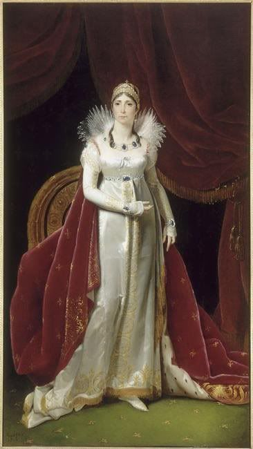
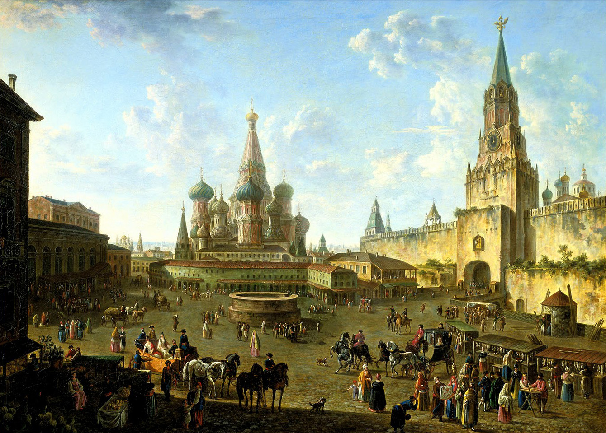

Vừa mới ký xong Hòa Ước Schönbrunn, Napoléon liền rời Vienna và trong những ngày sau đó, cũng như sau trận Ai Cập, Marengo, Austerlitz hoặc Tilsit, Napoléon chiến thắng trở về kinh thành.
Đế quốc rộng lớn mênh mông lại mở mang thêm bờ cõi, các nước chư hầu trung thành đã được khen thưởng hậu hĩ, và một vài nước ương ngạnh đã bị trừng phạt tàn nhẫn, Giáo Hoàng bị tước đoạt đất đai, nghĩa quân Tyrol bị đánh tan tành, quân du kích của thiếu tá Sin bị hội đồng quân sự Phổ xử bắn theo lệnh của Napoléon; tin từ Anh bay đến: Các thương nhân và nhà công nghiệp suy sụp, tự sát và phá sản, dân chúng bất mãn. Vậy là cuộc phong tỏa lục địa dường như đang biện hộ cho những ai đã đặt niềm hy vọng vào nó. Cái đế quốc bao gồm cả thiên hạ ấy cơ đồ đang đứng trên đỉnh cao nhất của sự rạng rỡ, uy lực, phú cường và quang vinh. Napoléon biết rằng mình đã khuất phục được Châu Âu chỉ bằng bạo lực và giữ được nó chỉ bằng cách làm cho nó sợ hãi. Nhưng nước Anh không chịu đầu hàng; Nga Hoàng thì rõ rệt là xảo quyệt, đã không giúp đỡ gì Napoléon trong cuộc chiến tranh vừa mới kết thúc đó và chỉ giả vờ gây chiến với Áo; nhân dân Tây Ban Nha, mặc dù bị thảm sát, giết chóc, vẫn không ngừng kháng cự và chiến đấu với lòng quả cảm bất khuất, và nếu như trước đây, thắng lợi Wagram, cũng như bất cứ một thắng lợi nào khác của Napoléon, đều đã không có chút ảnh hưởng gì đến họ, thì nay uy danh mỗi ngày mỗi cao lớn của kẻ chiến thắng cả thiên hạ ấy cũng chẳng làm cho họ sờn lòng. Xung quanh Napoléon có những Thống Chế tận tụy như Junot, những kẻ tham lam tài trí như Bernadotte, những kẻ phản bội thông minh, xuất thân từ giai cấp quý tộc, như Talleyrand, những kẻ phục tùng mù quáng như Savary; chỉ cần Napoléon khẽ ra hiệu là chúng sẵn sàng bắn chết ngay bố đẻ của chúng; những quan cai trị, bọn vương hầu sắt đá và hà khắc như Davout, bọn họ có thể đốt thành Paris không chút do dự nếu việc đó cần thiết cho công việc của họ; còn có cả một bầy tham lam, ngông nghênh, bất lực, gây gổ, đó là số anh chị, em của Napoléon đã được phong vương, trách phận, cấu xé lẫn nhau, và bọn họ chỉ là một mối lo âu, bực dọc thường xuyên cho ông Hoàng Đế.
Napoléon cũng như mọi người ở Pháp đều tin rằng kỷ nguyên chinh chiến còn lâu mới chấm dứt, nhưng viên đạn dành để giết Napoléon thì đã được đúc sẵn rồi. Napoléon phân định rõ được rằng ông đã làm những gì ở nước Pháp và làm những gì cho nước Pháp, đã làm gì cho những “quận cũ”[35]. Với tư cách là Hoàng Đế Phương Tây, là vua nước Ý, là người bảo vệ Liên Bang Sông Rhine. v. v... Napoléon cho rằng phần thứ nhất sự nghiệp của mình có thể vững bền được trong nhiều thế kỷ, còn phần thứ hai thì chỉ đứng vững chừng nào ông ta còn sống.
Cần phải có một triều thống, cần phải có một người kế nghiệp mà ắt hẳn Joséphine sẽ không có cho Napoléon; Napoléon cần một người vợ khác. Giờ đây, vết thương ở Ratisbonne và con dao của anh sinh viên Staps lúc nào cũng nhắc nhở Napoléon rằng tất cả những cái mà ông ta đã xây đắp hiện đang như ngàn cân treo sợi tóc, cho nên vấn đề triều thống đã trở thành chủ yếu đối với Napoléon. Những nhà viết sử người Pháp đã dành hàng trăm cuốn sách cho Joséphine, nói về cuộc đời và những chuyện tình sử, về hôn nhân, về cơn ngất của Joséphine khi lần đầu tiên Napoléon đột ngột nói rằng phải ly dị Joséphine để lấy một người khác hợp với quan niệm của Napoléon. Đối với chúng ta, mẩu chuyện này chỉ như một mắt xích trong cả chuỗi sự kiện chính trị xảy ra sau trận Wagram, và chính lý do ấy mà chúng ta sẽ chỉ kể vắn tắt.

.Mặc dầu Joséphine hơn Napoléon sáu tuổi, nhưng trong những năm đầu ăn ở với nhau, Napoléon đã say đắm Joséphine hơn bất cứ một người đàn bà nào khác. Napoléon đã không bao giờ yêu ai như thế nữa, ngay cả đối với nữ công tước Waleska, không nói đến những phụ nữ khác mà Napoléon đã có quan hệ trong thời gian lâu dài hay ngắn ngủi. Những kể từ những năm đi chiến dịch nước Ý, 1796 và 1797, những năm mà Napoléon viết cho Joséphine những bức thư nồng cháy và đầy khát vọng say đắm, đến nay thời gian đã trôi đi nhiều. Khi được tin Joséphine bị tình dục lôi cuốn trong lúc ông vắng mặt, Napoléon đã không lìa bỏ Joséphine và dù mối tình không còn đằm thắm như xưa, Napoléon vẫn yêu Joséphine. Năm năm tháng tháng qua đi, Joséphine sống trong cảnh kính sợ chồng. Napoléon đã cấm cả Joséphine cầu cạnh ông che chở cho bất cứ một người nào, và trong khi đuổi khéo con người được Joséphine che chở, Napoléon không quên nói thêm: “Nếu Hoàng Hậu mà đã can thiệp giúp hắn thì rõ ràng hắn là kẻ chẳng làm nổi trò gì”. Napoléon ghét cả các hình thức can thiệp yếu ớt đó của nữ vào công việc của Nhà Nước và trong các công việc nói chung.
Dù cho Joséphine là con người cực kỳ phù phiếm, không thể nghĩ đến gì hơn là áo quần, kim cương, khiêu vũ và các trò du hí khác. Napoléon cũng không thấy có gì đáng chê trách. Lúc bấy giờ, trong giới thượng lưu, người ta nói rằng nếu Napoléon đã ngược đãi nữ sĩ Stael bằng đủ cách thì không phải vì những tư tưởng tự do và tinh thần chống đối của bà - lẽ ra Napoléon đã có thể tha thứ cho điều đó - mà vì bà là người thông minh và học thức, mà Napoléon lại không thể tha thứ những đức tính khó coi đó trong một người phụ nữ. Theo quan điểm ấy thì Joséphine không có điều gì làm cho Napoléon nổi giận được. Những tài liệu và những nhà viết tiểu sử đã nói đúng khi họ đồng thanh quả quyết rằng Napoléon đã quyết định ly dị với tâm trạng không vui.
“Chính trị không có tình cảm mà chỉ có lý trí”, Napoléon nói với Joséphine như vậy, vào tháng 11 năm 1809, khi việc ly dị đang tiến hành. Napoléon vẫn tiếp tục yêu Joséphine và cả hai vẫn sống chung đụng. Ngày 15 tháng 12 năm 1809, giấy ly dị được ký kết trước mặt đông đủ văn võ bá quan của đế chế và hoàng gia. Bấy giờ hai người xa nhau, nhưng những ngày sau đó, Napoléon vẫn viết cho Joséphine những lá thư trìu mến nhất gửi về Malmaison, nơi Joséphine lui về ở đó, trong toà lâu đài của Napoléon ban cho.
Giáo Hoàng được mời đến để thay mặt nhà thờ Thiên Chúa phê chuẩn việc ly dị. Đối với những loại công việc như thế, nhà thờ thường tỏ ra rất lề mề và ngang ngạnh. Nhưng những chức sắc của Toà Thánh đã đứng ra làm việc đó thay Pius VII với một tinh thần hết sức khẩn trương bởi vì kẻ thỉnh cầu là kẻ đầy quyền lực.
Hội Đồng Tư Vấn các triều thần được triệu tập cấp tốc; sau khi nghiên cứu vấn đề, Hội Đồng đã quyết định cầu xin Hoàng Đế hãy vì quyền lợi của đế chế mà lấy một người vợ khác. Số đông hoàn toàn tán thành ý kiến của Napoléon. Bởi một mặt họ mong muốn cái của cải vật chất gắn chặt với đế chế của bọn họ tồn tại vĩnh viễn dưới vương quyền của dòng họ Bonaparte, chả là họ sợ dòng họ Bourbon phục hưng và họ thấy rằng “nước Pháp mới” chỉ vững bền khi có một người trực tiếp kế thừa ngôi báu ra đời. Mặt khác, tất cả mọi người, cho đến cả kẻ phản bội Talleyrand trước kia bị ruồng bỏ, ai nấy đều mơ tưởng một sự hòa hợp mật thiết, không những về chính trị mà còn về cả triều thống của Napoléon, với một trong hai nước lớn là Áo hoặc Nga. Bọn họ coi đó là biện pháp để tạm ngừng các cuộc chiến tranh liên miên và các nỗi nguy nan không tái diễn. Một số kẻ (do Fouché đứng đầu) muốn Napoléon lấy công chúa Anna Pavlovna, em gái Hoàng Đế Aleksandr; một số kẻ khác lại ưng ý con gái Hoàng Đế Francis là công chúa Marie Louise.
Vừa ly dị xong, Napoléon đã chú ý chọn một vị hôn thê.Trong tình thế này, Napoléon đã tỏ ra có trí phán đoán nhanh chóng và tính minh bạch khác thường: Napoléon không phải phí thời gian để điểm xem công chúa nào có thể lấy làm vợ và thực tế cũng không cần phải tìm kiếm lâu la gì. Ngoài đại đế quốc Pháp ra, trên thế giới này chỉ còn có ba cường quốc xứng đáng với danh đó: Anh, Nga và Áo. Nhưng Pháp lại đang tiến hành một cuộc chiến tranh sống còn với Anh. Còn lại Nga và Áo, rõ ràng là nước Nga mạnh gấp bội nước Áo, vì Áo vừa mới bị Napoléon giáng cho một trận thua khủng khiếp trong cuộc chiến tranh chống Pháp lần thứ tư trong 13 năm trời. Vậy thì trước hết cần phải ngỏ ý với nước Nga và cầu hôn với một trong hai công chúa em gái Hoàng Đế Aleksandr. Chọn ai là chuyện rất phụ, vả lại Napoléon cũng chưa bao giờ được trông thấy mặt hai người. Nhưng triều đình Nga tức tốc gả vội Catherine Pavlovna cho George ở Đại Công Quốc Oldenburg. Đại sứ Pháp ở Peterburg lãnh trách nhiệm thăm dò Nga Hoàng về Anna, nàng công chúa còn lại.
Vào tháng 12 năm 1809 và tháng 1 năm 1810, triều đình Nga xôn xao đến cực độ. Ở Peterburg, Aleksandr đệ nhất luôn luôn nói với Caulaincourt bằng những lời phỉnh phờ rằng ông ta rất mong muốn gả Anna cho Napoléon, nhưng theo ý kiến của Hoàng Thái Hậu (Maria Feodorovna) thì Anna hãy còn trẻ quá, công chúa mới có 16 tuổi.v.v. Ở Pavlovsk, Maria Feodorovna cực lực phản đối việc kết hôn đó và một bộ phận đáng kể của triều đình Nga đã ủng hộ Maria. Năm này qua năm khác, khi cuộc phong toả lục địa ngày càng ngặt nghèo bao nhiêu thì mối căm hờn của toàn bộ giai cấp quý tộc và đặc biệt là của bọn quý tộc đại địa chủ đối với Napoléon cũng tăng lên bấy nhiêu.
Ngày 28 tháng 1 năm 1810, Napoléon triệu tập một cuộc họp trọng thể các triều thần, tại cung điện Tuileries, để thảo luận vấn đề ly dị và kết hôn mới của ông ta. Một số người trong đám triều thần - đứng đầu là quan chưởng ấn Cambacérès, vua xứ Naples Murat và Bộ Trưởng Bộ Công An Fouché - tỏ ý tán thành công chúa Anna Pavlovna, một số người khác tán thành công chúa Marie Louise, con gái Hoàng Đế Francis đệ nhất. Còn như Napoléon, tất nhiên là bực tức về thái độ lững lờ của triều đình Nga, đã tỏ rõ cho mọi người thấy là mình thiên về nàng công chúa nước Áo. Hội Đồng không đi đến một quyết nghị dứt khoát.
Chín ngày sau, người ta nhận được tin từ Peterburg gửi đến nói rằng Hoàng Thái Hậu muốn được hoãn cuộc hôn lễ của con gái với Napoléon lại ít lâu, vì lẽ Anna còn quá trẻ tuổi. Cũng cùng ngày hôm ấy, đại sứ Áo ở Paris là Metternich được mời đến để thăm dò xem liệu Hoàng Đế nước Áo có ưng thuận cho Napoléon kết hôn với con gái Hoàng Đế không. Ngay lập tức và không một chút do dự (bởi người ta đã dự kiến được hết mọi vấn đề trong khi Napoléon đang thăm dò việc hôn nhân với quận chúa Nga), Metternich tuyên bố rằng nước Áo sẵn sàng gả nàng công chúa trẻ tuổi cho Napoléon, mặc dầu từ trước đến nay chưa bao giờ người ta chính thức dạm hỏi về vấn đề ấy (vả lại, cũng không thể đặt vấn đề ấy ra được). Một cuộc hội nghị khác được nhóm họp ngay ở cung điện Tuileries, vào cùng ngày hôm đó, tức là chiều ngày 6 tháng 2 và nhất trí tán thành cuộc hôn nhân với cô công chúa Áo.
Ngày hôm sau, mồng 7 tháng 2 năm 1810, giấy giá thú đã làm xong. Công việc này không đòi hỏi gì nhiều công phu: Người ta chỉ còn việc lấy hồ sơ lưu trữ ra và sao chép lại giấy giá thú của ông vua đã trị vì nước Pháp trước Napoléon là vua Louis XVI kết hôn với Marie Antoinette cũng là công chúa nước Áo; Marie Antoinette không phải ai xa lạ chính là cô của Marie Louise, vị hôn thê của Napoléon. Giấy giá thú lập tức được gửi đến Hoàng Đế nước Áo và Hoàng Đế nước Áo phê chuẩn ngay, việc này được thông báo ở Paris vào ngày 21 tháng 2 và đến ngày 22, Thống Chế Berthier, tổng tham mưu trưởng, đã đi Vienna để đảm nhận một nhiệm vụ kỳ quặc là thay mặt chú rể, tức là thay mặt Napoléon, trong buổi hôn lễ sẽ cử hành ở thủ đô nước Áo.
Ở Vienna, người ta phấn khởi đón chào cái tin về sự quyết định bất thình lình của Napoléon. Sau những thất bại khủng khiếp và những thiệt hại nặng nề vào năm 1809, nước Áo coi cuộc kết hôn ấy có khác gì người chết đuối vớ được cọc. Ở thủ đô Áo, vài ba chuyện rắc rối nhỏ nhặt, không đẹp, làm vẩn đục quang cảnh những ngày hoan hỉ ấy đã được người ta lờ đi một cách dễ dàng. Cũng như thế, đúng giữa lúc diễn ra những cuộc vui vầy trước khi tiến hành hôn lễ, Napoléon cho mang người thủ lĩnh nghĩa quân vùng Tyrol, đã bị bắt, đi xử bắn. Trước khi Hope ngã dưới làn đạn (ông bị bắn ở Mantua), ông đã có thì giờ để hô lớn: “Đức Hoàng Đế Francis anh minh muôn năm!”. Nhưng vị Hoàng Đế Francis anh minh, người mà Hope đã hy sinh cả đời mình, vì ông ta, lại cấm mọi người không được nhắc đến tên người nông dân tầm thường ấy ở vùng Tyrol, bởi vì rất có thể lòng trung thành quá mức và lòng yêu nước chưa đúng của Hope sẽ gây cho Napoléon tức giận tất cả nước Áo.
Ngày 11 tháng 3 năm 1810, trong nhà thờ Vienna, xung quanh đầy người xem, hôn lễ của cô công chúa Marie Louise 18 tuổi và Napoléon đã được cử hành trước mặt toàn thể hoàng gia nước Áo, triều đình và đông đủ các đoàn ngoại giao, quan lại cao cấp và các tướng lĩnh quân đội. Cô dâu chưa bao giờ được gặp mặt chú rể, ngay cả đến ngày cưới cũng không được trông thấy mặt, vì như chúng tôi đã nói, Napoléon cho rằng bận tâm và thân chinh đến tận Vienna là một sự thừa ngay cả trong trường hợp hết sức đặc biệt là hôm làm lễ cưới mình, nhưng rồi Vienna cũng lại thích nghi cả với cách xử sự ấy. Thống Chế Berthier và Đại Công Tước Charles, cả hai, với thái độ trang nghiêm hoàn hảo, đã chấp hành đầy đủ mọi thủ tục lễ nghi mà một chú rể phải làm. Độc giả chắc hơi ngạc nhiên và sẽ hỏi rằng: Làm thế nào mà hai nhân vật đó có thể thay thế được chú rể vắng mặt? Thì đó cũng chính là một câu chuyện lạ lùng đối với cả những người đương thời ít biết đến những chi tiết về các cuộc cưới xin của hoàng gia. Berthier được Napoléon phái đi thay mặt chính bản thân Hoàng Đế và chính thức cầu hôn với Marie Louise, còn như Đại Công Tước Charles, theo yêu cầu và lệnh mới của Napoléon, phải có mặt ở nhà thờ để Berthier giao Marie Louise cho và lúc này ông Đại Công Tước ấy thay mặt Napoléon - cũng như Berthier đã làm từ trước cho đến lúc này - dẫn Marie Louise đến bàn thờ, đứng đó cạnh Marie Louise trong khi làm phép cưới, sau đó bà Hoàng Hậu mới của nước Pháp đã được đưa về Pháp bằng các nghi thức và với đoàn hộ giá theo cương vị của mình. Khi đi qua các nước chư hầu, trong đó có xứ Bavaria, đến đâu Hoàng Hậu cũng được đón tiếp xứng đáng với tư cách là vợ của con người đã chiến thắng Châu Âu. Napoléon đi đón Marie Louise không xa là mấy, trên đường đi Compiègne. Lúc ấy hai vợ chồng mới nhìn thấy nhau, lần đầu tiên trong đời họ. Việc này gây ra ở Châu Âu một ảnh hưởng rộng lớn và được giải thích bằng nhiều cách. “Thế là từ này trở đi chiến tranh chấm dứt, Châu Âu đã ở vào thế ổn định, kỷ nguyên hạnh phúc đã mở ra”, đó là lời các thương gia trong các thành phố đồng minh thương nghiệp miền Tây Bắc nước Đức, họ tin chắc rằng nước Anh, không có nước Áo làm chỗ dựa ở trên lục địa nữa, sẽ phải đi đến thoả hiệp. Sau cuộc thăm dò lần đầu tiên ý kiến các quan lại cao cấp người Pháp, các nhà ngoại giao đã phát biểu rằng: “Chỉ vài năm nữa là Napoléon sẽ gây chiến với một trong số hai nước cường quốc nào mà sau này không tức khắc gả vợ cho ông ta”.
Vì tình hình thế giới không ổn định, nên rõ ràng là mỗi việc tăng cường cho sự liên minh giữa Napoléon và nước Nga thêm chặt chẽ đều là một mối đe dọa đến chính sự tồn tại của nền quân chủ Áo và mọi sự xích lại gần nhau giữa Napoléon và nước Áo đều đặc biệt giúp cho Napoléon được rảnh tay đối với nước Nga. Một vài nhà quý tộc người Áo, như ông hoàng thân Metternich, bố đẻ viên đại sứ Áo ở Paris trước đây, đã mừng rỡ trong bụng khi nhận được tin về cuộc hôn nhân sắp tới giữa Napoléon; con trai ông ta là Klemens Metternich, lúc đó đã là người có tiếng tăm, cũng vui lộ ra mặt, ở Schönbrunn, người ta nhắc đi nhắc lại: “Nước Áo đã thoát nạn”. Thành phố Peterburg hoang mang và chấn động. Maria Feodorovna hoan hỉ khi thấy không phải là con gái mình mà là con gái của Hoàng Đế nước Áo đã bị mang nộp cho “con quỷ nửa người nửa bò”[36]. Nhưng Aleksandr đệ nhất, Rumyantsev, Kuryakin và cả những địch thủ hăng hái nhất của Khối Liên Minh Pháp đều tỏ ra lo ngại. Họ thấy hình như Áo đã hoàn toàn đi theo đường lối của Napoléon và hình như trên lục địa chỉ còn lại nước Nga là nước đương đầu với kẻ xâm lược đáng ghét của cả Châu Âu.
Ngay khi vừa cưới xong, Napoléon đã tích cực gấp bội trong việc thực hiện triệt để chính sách kinh tế của ông.
Nếu không hiểu bản chất đường lối kinh tế của Napoléon thì không thể nào thấu hiểu được rằng nền đế chế của Napoléon dựa vào cái gì và cũng không thể nào lý giải một cách đúng đắn và thoả đáng những nguyên nhân đã làm cho chế độ Napoléon sụp đổ.
Cuộc phong toả lục địa chỉ là một bộ phận tổ thành nền pháp chế kinh tế do Napoléon ban bố. Chính sách của Napoléon trong lĩnh vực này hoàn toàn phù hợp với đường lối chủ trương chung của Napoléon. Từ chỗ là Hoàng Đế của nước Pháp, Napoléon đã hy vọng trở thành Hoàng Đế của cả Phương Tây bằng một loạt các cuộc chiến tranh xâm lược và còn nhằm mở rộng lãnh thổ của mình sang tận Syria, Ai Cập và Ấn Độ, nên khi đã là ông chúa tuyệt đối, trong chính sách kinh tế, Napoléon kiên quyết bắt “các quận mới” phải lệ thuộc vào quyền lợi của “các quận cũ”, nói cách khác là lệ thuộc vào nước Pháp mà Napoléon đã chiếm được vào ngày 18 Tháng Sương Mù. Vậy giữa các “quận cũ” và các “quận mới” của đế quốc khổng lồ ấy có gì khác nhau? Khác nhau rất xa, Napoléon đã cố tình xác lập dần dà cho các “quận cũ” vị trí của những lực lượng đi bóc lột, còn các “quận mới” thì vị trí của chúng là vị trí của những khu vực bị bóc lột, và vì lẽ đó mà phải dùng vũ lực để ngăn cản sự phát triển kinh tế của các nước bị chiếm.
Ngay từ năm đầu tiên lên nắm chính quyền, Napoléon đã có một thứ học thuyết riêng hoàn chỉnh và nó cứ tồn tại đúng như vậy không có gì thay đổi đến hết triều đại của ông ta: Có cái gọi là quyền “dân tộc” và ngoài dân tộc ra là phần còn lại của nhân loại, phần ấy cũng có những quyền lợi của nó gọi là quyền lợi của nhân loại, quyền lợi của nhân loại không những phải phụ thuộc mà còn phải hy sinh cho quyền lợi của dân tộc. Nhưng biên giới của “dân tộc” đó là đâu? Phía Bắc giáp nước Bỉ; phía Đông không phải là sông Rhine, mà là đường biên giới ngăn cách nước Pháp cũ với nước Đức bên tả ngạn sông Rhine; phía Tây giáp biển Manche và Đại Tây Dương, phía Nam dãy núi Pyrenées, Napoléon càng nhằm mở rộng phạm vi thế lực của mình lại càng tìm cách thu hẹp khái niệm quyền lợi “dân tộc”, hạn chế diện tích địa lý cũng như quyền lợi kinh tế của cái nước đầy đặc quyền đặc lợi ấy, tức là “nước Pháp cũ”. Điều này hoàn toàn có thể hiểu được: Khuynh hướng đó đều có mối liên hệ mật thiết với nhau trong tư tưởng của giai cấp đại tư sản kỹ nghệ và tư sản thương mại mà Napoléon đã lấy quyền lợi của chúng làm nền tảng cho đường lối chính trị ăn cướp của mình đối với các nước khác, đó chính là những quyền lợi mà Napoléon gọi là “quyền lợi dân tộc”. Chính bản thân nước Bỉ và vùng tả ngạn sông Rhine, tuy bị chiếm đoạt một cách vĩnh viễn, bị trực tiếp sáp nhập và bị phân chia ra làm nhiều quận, cũng không được coi là “dân tộc”, mà chỉ đơn giản là những kẻ đối địch với giai cấp tư sản Pháp mà người ta có thể và cần phải tiêu diệt để biến đất nước ấy thành môi trường hoạt động của tư bản Pháp: Đó là chưa kể đến xứ Piedmont, đến nước Hà Lan, đến các thành phố đồng minh thương nghiệp ở miền Tây Bắc nước Đức, đến những tỉnh vùng Illyria bị sáp nhập sau này. Tất cả những đất đai bị đế chế xâm chiếm đều nằm trong phạm vi đế quốc bởi vì có như thế người ta mới có thể bắt lính, đánh thuế, bắt cung phụng quân đội...v.v., nhưng mặt khác vẫn là ngoại quốc, bởi vì có như thế người ta mới có thể ngăn cấm được các xí nghiệp luyện kim và tơ sợi, các nhà sản xuất rượu mạnh người Bỉ, người Đức, người Hà Lan không được cạnh tranh với người Pháp ở trong nước Pháp cũ cũng như ở ngay trên đất nước của họ, tức là tổ quốc của họ mà Napoléon đã chinh phục.
Rất tự nhiên rằng đối với các nước bị chinh phục như: Nước Ý mà Napoléon đã xưng vương, nước Thụy Sĩ mà ông ta là “người đứng giữa hòa giải”, Liên Bang Sông Rhine (gồm Bavaria, Saxony, Württemberg, Baden...v.v.) mà ông ta là “người bảo hộ”, vương quốc Westphalia - tức là một khối các quốc gia thuộc miền Trung và miền Bắc nước Đức - mà ông ta đã phong cho em là Jérôme làm vua, nước Ba Lan với vua xứ Saxony mà ông ta đã lập làm chư hầu của mình...v.v. thì trong đầu óc Napoléon vẫn tồn tại cái ảo tưởng muốn cho tình trạng của những nước ấy phân biệt hẳn với nước Pháp - tất cả phải là thị trường tiêu thụ hoặc là nguồn cung cấp nguyên liệu cho công nghiệp Pháp. Người ta bỏ tù những ai định lén lút đưa vào nước Ý bất cứ phương pháp cải tiến kỹ thuật nào cần thiết cho công nghiệp nước Ý, đó là điều mà Napoléon, “vua nước Ý", đã nghiêm cấm để bảo vệ quyền lợi cho các nhà công nghiệp Pháp được Hoàng Đế Pháp Napoléon che chở. Napoléon chú trọng trực tiếp chỉ đạo việc chấp hành nghiêm ngặt đường lối chính sách của mình: Napoléon cấm nhập vào Pháp, Hà Lan, Ý loại dao Solingen, cấm nhập vải, len xứ Saxony vào vương quốc Westphalia; Napoléon ra luật cấm xuất cảng tơ sống của Ý và của Tây Ban Nha, vì còn phải bảo đảm việc cung cấp nguyên liệu cho các nhà máy chế tạo ở Lyon, ông ta định ra thuế xuất quan, thuế đặc biệt đối với hàng hoá xuất cảng của Illyria, nếu như hàng hoá ấy không chuyển qua các nước dưới quyền đô hộ trực tiếp của ông ta, mà lại vận chuyển qua các nước chư hầu. Về vấn đề này, văn phòng của ông Hoàng Đế hằng ngày đã tung đi khắp Châu Âu hàng đống đạo luật, quy chế, chỉ thị hoặc những lời khiển trách. Chính sách này đã làm giàu và củng cố giai cấp đại tư sản Pháp, nó cũng đã củng cố cả quyền hành của Napoléon ở Pháp, nhưng dĩ nhiên, nó gây phẫn nộ, nó phá hoại và đàn áp giai cấp tư sản công nghiệp và thương nghiệp và số đông người tiêu thụ khắp cả vùng của đế quốc rộng lớn, trừ các “quận cũ”. Về quan điểm kinh tế, Napoléon, người sáng lập ra đế quốc Phương Tây, chỉ là một ông vua người Pháp nặng đầu óc dân tộc hẹp hòi, chỉ là người tiếp tục sự nghiệp của vua Louis XIV và Louis XV, là người thực hiện vô số tư tưởng của Conberg. Vì lợi ích của giai cấp tư sản công nghiệp Pháp mà Napoléon đã mở mang trong nhiều năm trời toà lâu đài đồ sộ của nền quân chủ hoàn cầu của ông ta. Thật rõ ràng là trong khi bóp chết các lực lượng sản xuất của các nước bị nô dịch thì toà lâu đài ấy chỉ đi đến sụp đổ, dù cho không có cuộc khởi nghĩa của dân tộc Tây Ban Nha, không có cuộc cháy thành Moscow, không có sự phản bội của Marmont dưới chân thành Paris, không có sự chậm trễ của Grusy ở Waterloo, nói tóm lại, dù cho bức tranh chính trị và chiến lược của cuộc chiến đấu khổng lồ mà Napoléon đã đeo đuổi được phác họa khác hẳn với thực tế đã diễn ra trong những năm cuối cùng của triều đại ông ta.
Cũng sẽ không đúng, nếu ta nghĩ rằng Napoléon chỉ là kẻ chấp hành ngoan ngoãn ý nguyện của giai cấp đại tư sản, cái giai cấp đã đưa Napoléon lên nắm chính quyền và cuối cùng đã giao nền chuyên chính cho Napoléon. Đúng là Napoléon không những đã lấy quyền lợi của giai cấp đại tư sản làm nền tảng cho chính sách đối nội và đối ngoại của mình, nhưng phải thấy rằng đồng thời Napoléon còn nhằm buộc giai cấp tư sản khuất phục ý muốn của ông ta, bức giai cấp tư sản phải phục vụ cho cái Nhà Nước mà Napoléon coi là có “mục đích tư thân” và sự nô dịch Châu Âu về mặt kinh tế mà chúng ta vừa nói tới thì Napoléon lại đặt nó nằm trong quyền lợi của Nhà Nước tư sản Pháp là chính người ta rất hiểu rằng một vài tầng lớp của giai cấp tư sản không thể chấp nhận được điều đó và ngấm ngầm tiến hành một cuộc chiến tranh thực sự chống lại tình hình ấy bằng cách vi phạm những mệnh lệnh phiền nhiễu đối với họ và bằng tất cả mọi các kinh doanh bất hợp pháp như tích trữ đầu cơ, lũng đoạn giá cả, v. v.
Đến đây, ta cũng không quên được lời nhận xét tinh tế và sâu sắc của Marx trong cuốn Gia Đình Thần Thánh, vì nếu không dựa vào đó thì việc phân tích các nguyên nhân gây nên sự sụp đổ của cái đại đế quốc Napoléon sẽ không được rõ ràng: “Không phải là phong trào cách mạng ngày 18 Tháng Sương Mù nói chung trở thành miếng mồi của Napoléon... - Marx viết - miếng mồi đó là giai cấp tư sản tự do...”[37]. “Vả lại, đã phân biệt được thực chất của Nhà Nước hiện đại; Napoléon hiểu rằng cái Nhà Nước ấy lấy sự tự do phát triển của xã hội tư sản, lấy sự tự do hoạt động của các lợi ích riêng...v.v. làm nền tảng. Napoléon đã nhất quyết thừa nhận nền tảng đó và đặt nó dưới sự bảo vệ của mình. Như vậy Napoléon không phải là một tay khủng bố không tưởng. Nhưng đồng thời Napoléon tiếp tục coi Nhà Nước là một mục đích tự thân “và giai cấp tư sản” chỉ là tên thủ quỹ và là kẻ dưới quyền ông ta, không được có ý chỉ riêng của nó. Ông ta đã hoàn thành chủ nghĩa khủng bố bằng cách thay thế cuộc cách mạng thường trực bằng cuộc chiến tranh thường trực. Napoléon lấy làm mãn nguyện đã nhồi được lòng ích kỷ dân tộc Pháp vào chủ nghĩa khủng bố ấy, nhưng đồng thời cũng lại yêu sách giai cấp tư sản phải hy sinh sự nghiệp, ý muốn của cải...v.v. mỗi khi Napoléon cần đến để thực hiện những mục đích chính trị xâm lược của ông ta. Bàn tay độc đoán của Napoléon đã bóp nghẹt chủ nghĩa tự do của xã hội tư sản - chủ nghĩa duy tâm chính trị trong đời sống hàng ngày của nó - và Napoléon cũng không hề dung thứ cả những lợi ích vật chất quan hệ nhất đến sự sống còn của xã hội tư bản, chẳng hạn nền thương nghiệp và công nghiệp, mặc dầu chúng chẳng xung đột gì mấy với những lợi ích chính trị của Napoléon. Việc Napoléon khinh miệt những kẻ “kinh doanh” chỉ là một sự bổ sung vào việc ông ta khinh miệt “những nhà tư tưởng”. Và ở trong nước, Napoléon đấu tranh tư bản như là chống kẻ thù của Nhà Nước mà chính con người ông ta là hiện thân và cái Nhà Nước ấy được coi như một mục đích tự thân tuyệt đối. Vì vậy nên, thí dụ như Napoléon đã tuyên bố ở Hội Đồng Chính Phủ rằng ông ta sẽ không dung thứ cho những địa chủ những vùng đất đai rộng lớn muốn trồng trọt hay không là tuỳ họ. Kế hoạch của Napoléon nhằm đặt nền thương nghiệp dưới sự kiểm soát của Nhà Nước bằng cách Nhà Nước nắm trong tay sự vận tải bằng xe ngựa cũng có ý nghĩa như vậy. Các thương nhân Pháp đã chuẩn bị sự biến lần đầu tiên làm rung chuyển thế lực của Napoléon. Bằng cách gây nên một nạn đói giả tạo, bọn tích trữ đầu cơ thành Paris đã buộc Napoléon phải hoãn chiến dịch nước Nga lại hai tháng sau, vậy là đã hoãn lại đến một thời kỳ quá muộn[38]. Đó là sự phân tích nhân vật Napoléon - trong vô số nhận định của Marx về mặt xã hội và chính trị đã được trình bày trong cuốn Gia Đình Thần Thánh. Như vậy Marx đã vạch ra một cách rất tài tình rằng trong khi phân tích cơ sở xã hội của một đường lối chính trị nào đó thì nhà sử học không được coi thường vai trò cá nhân của những con người mà trong thực tế có trách nhiệm thực hiện đường lối chính trị đó, không được coi thường tính chất cũng như những cá tính của họ. Khi Marx nói “giai cấp tư sản tự do” trở thành “con mồi” của Napoléon, Marx đã quan tâm đến việc Napoléon xoá bỏ các nguyên tắc chính trị của cái bộ phận giai cấp tư sản đã nhìn thấy chính phủ lý tưởng của nó trong nền quân chủ lập hiến, thấy rõ việc tập trung quyền hành tuyệt đối vào trong tay nhà độc tài Napoléon, thấy rõ việc thủ tiêu các “quyền tự do” về mọi phương diện mà cuộc cách mạng tư sản năm 1789 đã nhân danh để khởi đầu. Marx nhấn mạnh rằng chủ nghĩa tự do tư sản, thể hiện trong hiến pháp 1791, đã bị đè bẹp ngay từ buổi đầu trong cuộc đấu tranh cách mạng do nền chuyên chính khủng bố của Hội Đồng Cứu Quốc tiến hành, rằng cái mưu đồ định làm sống lại và làm mạnh thêm thứ chủ nghĩa tự do đó dưới thời Viện Đốc Chính đã bị cuộc đảo chính của Bonaparte ngày 18 Tháng Sương Mù bóp chết một cách không kém phần tàn khốc. Trong trường hợp trên cũng như trong trường hợp dưới, mọi điều kiện cần thiết đã được thực hành để bảo đảm cho sự phát triển của chủ nghĩa tư bản, và giai cấp tư sản đã tạm thời ủng hộ nền chuyên chính Jacobin lúc ấy là cần thiết để hoàn thành việc xóa bỏ hẳn chế độ phong kiến, và đã ủng hộ nền chuyên chính Napoléon như một hình thức chính quyền có khả năng bảo đảm sự thống trị của tư bản và thích ứng nhạy bén với việc tiến hành các cuộc chiến tranh xâm lược. Thực tế, Napoléon đã điều khiển công việc của Nhà Nước theo như quyền lợi của giai cấp đại tư sản đòi hỏi, tuy rằng Napoléon chẳng ưa thích gì giai cấp ấy, và đã gọi chính quyền của bọn cự phú là “chính quyền quý tộc dơ dáy nhất”. Napoléon thường luôn luôn nhắc đến một trong số câu nói của ông: “Trong thời đại chúng ta, giàu có là kết quả của sự ăn cắp và cướp đoạt”.
Nền chuyên chính Napoléon, phục vụ lợi ích của Nhà Nước tư bản nói chung nhưng trong khi nhằm bành trướng thế lực bằng xâm chiếm các nước láng giềng thường đi trái với những nguyện vọng và nhu cầu của một vài tầng xã hội tư bản. Nền chuyên chính ấy coi giai cấp tư sản như một kho tàng vô tận phải phục vụ cho những mục đích chính trị phù hợp với những quyền lợi riêng của nó. Bộ phận lạc hậu về mặt chính trị của giai cấp tư sản Pháp, cái bộ phận chỉ biết có nhìn vào túi tiền, đã nhiều lần đối kháng với Napoléon. Marx đã nhận xét rằng đặc biệt là trước khi mở chiến dịch đánh nước Nga, một sự bất đồng ý kiến trầm trọng đã xảy ra, hay nói cho đúng hơn, sự bất đồng ấy đã giải thích chỗ rạn nứt sau này làm sụp đổ không những đế chế Napoléon, mà cả toàn bộ nền kinh tế tư bản xây dựng dưới sự bảo hộ của Napoléon. Vì vậy khi nói đến những nguyên nhân sụp đổ của đế chế Napoléon cần phải nhắc lại những tình trạng ấy.
Trước khi hồi cuối cùng của tấn bi kịch lịch sử đó mở màn, lúc mà mọi người đều đang run sợ và câm lặng trước mặt vị chúa tể uy quyền tuyệt đối, mà các vua chúa phải cúi rạp đầu xuống đất, phủ phục dưới chân, và ở trên lục địa chỉ có những người nông dân và thợ thủ công rách rưới người Tây Ban Nha là theo đuổi cuộc chiến đấu chống lại, thì trận gió đầu tiên của cơn giông tố sắp tới đã nổi trên đất đai của đế chế: Một cuộc khủng hoảng kinh tế đã bùng nổ. Đó là vào năm 1811, và con người, lúc ấy tựa hề như nằm ở trung tâm của các biến cố trên thế giới, đã không đủ sức để nắm được thực chất nội dung của cơn bão táp đó. Cuộc khủng hoảng diễn ra vào giai đoạn thứ hai của cuộc phong tỏa lục địa, một giai đoạn quyết liệt mà ít ra chúng ta cũng cần phải nói đến một vài lời.
Vào các năm 1810 - 1811, cuộc phong tỏa không còn như hồi năm 1806, tức là thời kỳ mà bản đạo luật đầu tiên ở Berlin đặt ra việc phong toả, và con người sáng lập ra nó cũng không còn hoàn toàn là con người đã ký bản đạo luật ngày 21 tháng 11 năm 1806 ở cung điện Potsdam.
Từ nửa cuối năm 1809, sau trận Wagram và Hòa Ước Schönbrunn, trong tư tưởng Napoléon lúc nào cũng in sâu hai niềm tin tưởng được phát ra từ trận Austerlitz và được hình thành rõ nét từ sau trận Jena và sau cuộc hạ thành Berlin. Cả hai niềm tin tưởng này đã quyết định mọi đường lối chính sách của Napoléon sau trận Friedland và Tilsit. Niềm tin thứ nhất là: Ông ta chỉ có thể bắt nước Anh quỳ xuống duy nhất bằng cách tàn phá nước Anh bằng cuộc phong tỏa lục địa. Niềm tin tưởng thứ hai được diễn đạt bằng câu: “Tôi có thể làm được tất cả” và như vậy thì cái tư tưởng sau đây sẽ bổ sung một cách logic cho câu ấy: “Vì vậy, tôi cũng có thể thực hiện được cuộc phong tỏa lục địa, dù có phải sáp nhập toàn bộ lục địa vào đế chế Pháp để làm việc đó”. Kẻ chiến thắng muốn sao thì làm vậy. Ở thế kỷ thứ V, Attila[39] cưỡng bức đưa vào hậu cung của y con gái của bất cứ ai trong vô số các tiểu vương ở các bộ lạc còn nửa dã man của xứ German, và ngày nay Napoléon chỉ mới vừa ngỏ ý ra là người ta gửi đến Paris cô con gái ông Hoàng Đế nước Áo, một nàng công chúa của triều đại kiêu kỳ và cao ngạo nhất trong thời xưa của nó và mọi người đều coi việc đó là một hạnh phúc lớn cho cái nước được ghép nên bởi những mảnh đất nát vụn mà Napoléon đã làm tiêu giảm uy quyền của dòng họ Habsburg.
Lục địa đã tỏ ra quy phục một cách hèn hạ như vậy thì hình như hoàn toàn có thể thanh toán nốt kẻ thù duy nhất còn lại: nước Anh. Còn những kẻ thù khác thì ngay cái việc kể đến cũng chẳng cần, “cái đám rách rưới cùng khổ” - như Napoléon thường gọi những người Tây Ban Nha - liệt vào hạng không đáng kể đến và Napoléon không muốn cho họ cái vinh dự được xếp vào hàng địch thủ. Sau khi lại đánh tan tành người Tây Ban Nha vào năm 1809 - 1810, Napoléon không muốn cả tiến hành chiến tranh với họ nữa và chỉ hạ lệnh bắt họ và xử bắn. Tuy nhiên Napoléon không thể tự đắm chìm quá lâu trong ảo tưởng đó được: Chiến tranh của những người du kích, du kích chiến tranh vẫn cứ diễn hoài, nhưng cũng lại ở đây, ông Hoàng Đế đã nhìn thấy nguyên nhân đầu tiên của chuyện chẳng hay vẫn là ở người Anh, bởi vì không những họ chỉ gửi vũ khí giúp cho Tây Ban Nha mà thôi, họ còn đổ bộ lên đất Tây Ban Nha những quân đoàn đầy đủ.
Nước Anh, và độc nhất chỉ có nước Anh đương đầu với Napoléon. Cuộc chiến đấu sống mái này giữa Napoléon và nước Anh chỉ có thể kết thúc bằng sự thất bại của một trong hai địch thủ. Trong khi ấy, Napoléon đã uổng công trong việc cố biến cuộc chiến đấu tay đôi thành một cuộc chiến đấu toàn lục địa chống lại nước Anh. Cuộc phong tỏa càng kéo dài bao nhiêu càng làm hại nghiêm trọng bấy nhiêu cho một bên là nước Anh và một bên là lục địa. Napoléon biết thế, điều đó không phải chỉ làm cho ông ta băn khoăn như trước khi ký Hòa Ước Tilsit, mà lại làm cho ông ta tức giận đến cùng cực. Suốt trong những năm ấy, cơn thịnh nộ của Napoléon đã chĩa vào những kẻ bí mật vi phạm việc phong tỏa lục địa, mà trên toàn cõi lục địa Châu Âu thì còn có sự không tuân lệnh nào công khai và hiển nhiên bằng việc một chính phủ khởi nghĩa đã được thành lập ở phía cực Nam bán đảo Tây Ban Nha. Đại khái việc trấn áp: Những kẻ buôn bán lậu bị xử bắn, những hàng hóa Anh tịch thu được đều bị thiêu hủy và Napoléon truất khỏi ngai vàng tất cả những nhà vua chúa nào mắc tội thông đồng với bọn buôn lậu.
Năm 1806, Napoléon đã phong cho em là Louis làm vua ở Hà Lan. Ông vua mới ấy biết rõ rằng việc cắt đứt hoàn toàn quan hệ buôn bán với nước Anh đang dẫn đến sự phá sản hoàn toàn của giai cấp tư sản thương mại, nền nông nghiệp, ngành thương nghiệp hàng hải Hà Lan và thảm họa kinh tế ấy sẽ giáng xuống nước Hà Lan nhanh chóng hơn các nước khác, bởi vì kể từ khi người Anh tước đoạt hết thuộc địa của Hà Lan (ngay sau khi người Pháp đặt ách thống trị trên đất nước Hà Lan) thì nền thương nghiệp của Hà Lan sống nhờ vào việc xuất cảng sang Anh rượu mạnh, phomát, vải nõn và vào việc nhập khẩu các sản phẩm của thuộc địa từ nước Anh tới. Những lý do ấy đã buộc Louis Bonaparte phải nhắm mắt làm ngơ trước việc buôn bán hàng lậu giữa biển Hà Lan với người Anh. Sau vài lần cảnh cáo em, cuối cùng Napoléon đã truất ngôi vua của em, tuyên bố vương quốc Hà Lan không còn tồn tại nữa, và với một sắc lệnh đặc biệt, đã sáp nhập lãnh thổ Hà Lan vào đế quốc Pháp, đem phân chia thành từng quận do các Quận Trưởng của ông ta cai trị.
Căn cứ vào những báo cáo trình rằng những thành phố đồng minh thương nghiệp ở miền Tây Bắc nước Đức như Hamburg, Bremen, Lübeck đã không trấn áp mạnh mẽ việc buôn lậu và người đại diện của Napoléon ở Hamburg là Bourrienne đã để bị mua chuộc, Napoléon liền lập tức cách chức Bourrienne và sáp nhập luôn cả những thành phố ấy vào đế quốc của ông. Napoléon đã truất ngôi cả những vua chúa nhỏ của các quốc gia Đức ở ven biển, không phải vì họ đã phạm phải một lỗi nào đó, mà vì Napoléon chỉ còn tin cậy có bản thân mình. Napoléon đuổi công tước xứ Oldenburg và tuyên bố hợp nhất công quốc ấy vào đế quốc, mặc dầu hành động đó đã làm cho Aleksandr - có họ hàng với công tước Oldenburg - hết sức bất bình.
Cuộc phong tỏa lục địa đã tác hại dữ dội đến đông đảo quần chúng tiêu thụ ở khắp các nước Trung Âu, nó làm cho giai cấp tư sản thương mại và các hãng thuyền vận tải ở các thành phố đồng minh thương nghiệp ở miền Tây Bắc cũng như ở miền ven biển nước Đức sẽ hoàn toàn phá sản. Ngay trong báo chí ở các nước bị chinh phục, chết dí dưới chế độ kiểm duyệt gay gắt, đôi khi người ta cũng thấy lộ ra những ý tứ trách móc cuộc phong tỏa lục địa, giấu trong những lời lẽ kín đáo. Những tài liệu chính trị in ở Đức bao giờ cũng buộc chính phủ Pháp phải chú ý tới[40], trong một bản báo cáo gửi lên Bộ Trưởng Bộ Công An vào năm 1810, người ta đã viết đại ý như vậy. Người ta nói thêm rằng người Đức thích tranh luận về chính trị, họ ngốn ngấu đọc rất nhiều báo chí của họ, những tạp chí hàng tháng, những cuốn lịch hàng năm, đó là chưa nói đến các cuốn sách, các vở kịch và các cuốn tiểu thuyết mà trong đó tác giả xảo quyệt đã khéo biết giới thiệu Liên Bang Sông Rhine như một kẻ tôi đòi, sự hợp tác giữa nước Pháp và nước Áo như kết quả của sự làm suy yếu lẫn nhau, nước Anh như một nước vô địch và nước Nga như những kẻ kế thừa chế độ quân chủ hoàn cầu. Ở Hà Lan, một nước bị cuộc phong tỏa lục địa tàn phá hoàn toàn, tình hình kiểm duyệt cũng chẳng hơn gì, vì Hà Lan là nước sống chủ yếu bằng sự buôn bán đường biển. Người ta nhận xét thấy ở Hà Lan cũng chung khuyết điểm như ở miền Bắc nước Đức: “Ở đó có nhiều báo chí quá”[41], đó là những câu mà chúng ta được đọc trong một bản báo cáo khác của công an. Đối với Napoléon, không có gì dễ dàng bằng việc trấn áp báo chí, Napoléon chẳng bao giờ lúng túng về vấn đề đó cả. Nhưng bảo đảm cho cuộc phong tỏa có đầy đủ hiệu lực là một nhiệm vụ phức tạp hơn nhiều.
Những khó khăn trong sự nghiệp của Napoléon đang bao vây ông ta tứ phía: Tìm được hàng vạn lính đoan, sen đầm, cảnh binh và viên chức đủ các loại, các cấp - làm tròn nghĩa vụ một cách lương thiện, với một tinh thần sốt sắng liêm khiết - để bao vây được toàn bộ dải bờ biển mênh mông của Châu Âu là một việc khó khăn hơn cả việc trừng phạt các vua chúa thông đồng với bọn buôn lậu, hoặc một viên quan toàn quyền hay xoay xoả, gian manh. Muốn có cafe, cacao, hồ tiêu, đồ gia vị, quần chúng tiêu thụ ở Châu Âu đã phải mua bằng giá đắt gấp năm, tám hay mười hai lần trước khi có cuộc phong toả, mà họ cũng chỉ mua được rất ít. Những nhà sản xuất sợi bông và những người Pháp, người Saxony, người Bỉ, người Tiệp, người Rumania dệt vải in hoa kiểu Ấn Độ đã phải mua chàm và bông bằng giá đắt hơn trước gấp năm, gấp mười lần, đã như vậy mà họ cũng chỉ mua được một số lượng rất ít so với trước đây, bởi nếu không có những nguyên liệu đó, nhà máy của họ sẽ phải đình chỉ sản xuất. Vậy thì những món lãi kếch xù giả tạo đó chạy đi đâu? Trước hết tiền đó chạy vào túi của bọn chủ thuyền và bọn buôn lậu người Anh, và thứ nữa là chạy vào túi bọn lính đoan và sen đầm Pháp. Khi người ta trả cho bọn lính tuần tiễu hoặc một người thu thuế một số tiền tương đương bằng tiền lương trong năm năm của họ để họ vui lòng ngủ một đêm yên tĩnh, hoặc khi người ta cho một gã sen đầm một tấm len hảo hạng trị giá 500 francs vàng và một số đường kính cũng bằng số tiền ấy chỉ với một điều kiện duy nhất là hãy đi chơi ở một chỗ cách xa một địa điểm nào đó trên bờ biển trong ba tiếng đồng hồ thì sức cám dỗ quả là quá mạnh! Napoléon biết điều đó và thấy rằng, trên mặt trận này, sự chiến thắng ắt sẽ khó khăn hơn ở Austerlitz, Jena hoặc Wagram. Napoléon đã bổ nhiệm và cử các thanh tra viên kiểm soát bình thường hay đặc biệt đến tận nơi, nhưng đều vô ích, vì bọn họ cũng đều bị người ta mua chuộc hết. Napoléon đã cách chức và giao bọn ấy sang tòa án, nhưng những kẻ thay thế họ lại đi theo con đường của những viên chức bị cách chức và bị kết tội, bọn họ chỉ cố gắng sao cho khôn ngoan hơn. Ông Hoàng Đế liền nghĩ ra một biện pháp khác: Một loạt các cuộc kiểm soát được nhất tề tiến hành, không những trong các thành phố và các làng ven biển, mà còn đi xa nữa, tận trung tâm Châu Âu, trong các cửa hàng, các kho hàng, các công sở. Hết thảy hàng hoá”xuất xứ từ nước Anh” đều bị tịch thu, còn việc chứng minh đó có phải hàng hóa của Anh hay không thì là trách nhiệm của những người sở hữu. Bị thiệt hại và hốt hoảng, các nhà có sản phẩm thuộc địa khả nghi nhất trong trường hợp này đều ra sức chứng minh rằng đó là những sản phẩm của Mỹ, chứ không phải của Anh. Và thực tế người Mỹ đã hốt của bằng cách dùng tàu có trương cờ của nước họ và tiêu thụ nhanh chóng hàng hóa của Anh chở đến bằng tàu của họ.
Bằng bảng giá qui định Trianon ban hành năm 1810, Napoléon đã làm cho việc buôn bán hợp pháp các sản phẩm thuộc địa, bất cứ do nước nào sản xuất, không thể nào tiến hành được. Các lò thiêu hàng bốc cháy trên toàn cõi Châu Âu: Vì không tin vào bọn công chức nhà đoan, cảnh binh, sen đầm, các nhà chức trách từ cao đến thấp, từ các vì vua chúa và các viên toàn quyền, những người gác đêm và lính kỵ tuần tra, nên Napoléon đã ra lệnh công khai thiêu hủy tất cả hàng hóa bị tịch thu. Theo lời của những người đã được chứng kiến thì từng đám đông quần chúng rầu rĩ và trầm lặng đứng nhìn người ta chất đống như núi những hàng vải hoa, vải len hảo hạng, hàng dệt Kashmir, những thùng đường, cafe, cacao, những hòm chè, những kiện bông và sợi, những két chàm, hồ tiêu, quế, rồi người ta tưới lên đó chất cháy và số hàng đã biến thành khói bụi ngay trước mắt họ[42]. “Anh chàng Caesar đã mất trí rồi”, báo chí Anh viết như vậy sau khi đã phải chịu đựng những cảnh tượng đó, hoặc ít ra thì là sau khi đã nghe tin đồn tới. Napoléon đã xác định rằng chỉ có hủy hoại cụ thể tất cả những hàng hóa nhập cảng quý giá đó mới có thể gây thiệt hại thiết thân đến bọn buôn lậu và gieo rắc nguy hiểm không những cho những kẻ lợi dụng đêm hôm tối trời để đổ bộ hàng lậu lên một nơi hẻo lánh ở quãng bờ biển dốc dựng cheo leo, hưu quạnh, mà còn nguy hiểm cả cho những phú thương ở Leipzig, Hamburg, Straßburg, Paris, Antwerp, Amsterdam, Genoa, Munchen, Warszawa, Milan, Triest, Venezia, v.v. là bọn ngồi tĩnh tọa trong cửa hàng mua lại số hàng lậu đã qua tay hàng hai, ba chặng.
Một vài tầng lớp của giai cấp tư sản, ở trong đế quốc Pháp cũng như trong các nước chư hầu, đã thu được những món lợi kếch xù và ngay cả trong những điều kiện như vậy, họ tiếp tục tán dương cuộc phong tỏa lục địa nói chung và tán thành tất cả những biện pháp của Hoàng Đế chống lại việc nhập cảng lậu các hàng hóa Anh. Đặc biệt, những nhà luyện kim rất lấy làm mãn nguyện, còn như những nhà sản xuất vải, sợi thì họ vừa tán dương vừa kêu ca phàn nàn. Dẫu sao người ta cũng không thể dệt được vải nếu không có bông, cũng không thể nhuộm được vải nếu không có chàm.
Đối với giai cấp tư sản thương mại và thợ thủ công chuyên sản xuất hàng xa xỉ thì sự phản ứng càng kịch liệt hơn: Họ đau đớn nhớ lại rằng trong mấy tháng đầu của những năm 1802 - 1803, ngay sau khi vừa ký xong Hòa Ước Amiens, có hàng nghìn những tay triệu phú người Anh nườm nượp đổ sang Paris vơ vét sạch - có thể nói như vậy được - đồ trang sức bày ở thủ đô, tất cả nhung, vải, lụa trong các kho hàng của thành phố Lyon. Họ than phiền rằng các cuộc chiến tranh liên miên đã làm cho các khách hàng cũ của họ ở Châu Âu bị phá sản. Đông đảo quần chúng tiêu thụ lại càng phẫn nộ hơn vì họ phải mua với giá cắt cổ. Cafe và đường cũng như các sản phẩm khác không bị hàng của Anh cạnh tranh, nhưng do đó bị đắt lên.
Cuộc khủng hoảng thương nghiệp và công nghiệp năm 1811 đã nổ ra trong những điều kiện như vậy.
Ngay từ cuối mùa thu năm 1811, người ta đã bắt đầu nhận thấy hàng hoá Pháp bán ra chậm dần, và hiện tượng đó phát triển nhanh chóng, lan ra khắp đế quốc, và đặc biệt là ở các “quận cũ” hay nói cách khác là ở ngay trên đất nước Pháp chính cống. Các nhà công nghiệp và thương nghiệp thỉnh cầu một cách lễ phép nhất rằng cuộc phong tỏa không những chỉ đánh vào túi tiền của người Anh mà đã bắt đầu tác hại đến cả bản thân họ, rằng họ thiếu nguyên liệu làm, rằng trong khi bóc lột các dân tộc bị thua trận (những người làm đơn thỉnh cầu đã phải dùng những câu ẩn ý vô cùng trang nhã và tế nhị) thì Hoàng Đế Bệ Hạ đã làm giảm sút sức mua của người tiêu thụ trên toàn lục địa Châu Âu, và do những cuộc tịch thu độc đoán các hàng hóa tồn trữ trong kho, cũng như trong khi để cho những hành động bất hợp pháp tự do phát triển và để cho bọn đương chức nhà binh và nhân viên hải quan lộng hành (dĩ nhiên họ không nói như thế, mà họ nói bằng những lời lẽ nhẹ nhàng hơn nhiều), Hoàng Đế sẽ làm phương hại đến sự thu nhập bình thường của ngân hàng, mà không có ngân hàng thì cả công nghiệp và thương nghiệp đều không thể tiếp tục tồn tại được.
Mỗi ngày cuộc khủng hoảng mỗi trở nên trầm trọng thêm. Nhiều xí nghiệp dệt và kéo sợi, thí dụ xí nghiệp sản xuất vải in hoa Risalenur, trước cuộc khủng hoảng có tới 3.600 thợ kéo sợi nam nữ, 8.822 thợ dệt, 400 thợ in hoa, tổng cộng hơn 12.000 người, mà đến nay, nếu như Napoléon đã không trợ cấp đặc biệt cho xí nghiệp đó một triệu rưỡi francs vàng thì hẳn là số người không còn đến 1/5. Nhưng vẫn cứ hết xí nghiệp này đến xí nghiệp khác đăng ký vỡ nợ. Tháng 3 năm 1811, Napoléon chỉ thị trợ cấp một triệu cho các nhà sản xuất ở Amiens và cho thu mua hàng đống sản phẩm của các nhà sản xuất ở Ruane, Saint Quentin và Ganges số hàng trị giá hai triệu francs. Ngoài ra còn có nhiều khoản trợ cấp khổng lồ cho các nhà sản xuất ở Lyon. Nhưng đó chỉ là một giọt nước trong biển cả.
Trong số những tư liệu mà tác giả cuốn sách này đã tìm kiếm được ở Sở Lưu Trữ Quốc Gia Pháp và những tư liệu nêu bật được mức độ đặc biệt của cuộc khủng hoảng thì chỉ có những tư liệu trong bảng tổng kê là đáng chú ý nhất. Ngày 19 tháng 4 năm 1811, Bộ Trưởng Bộ Nội Vụ báo cáo lên cho Napoléon biết rằng thợ thuyền ở rất nhiều xí nghiệp khiếu nại là không có việc làm; ông ta còn quả quyết rằng thợ thuyền bỏ đi ra ngoài nước rất nhiều. Ở Ruane, nạn thất nghiệp khủng khiếp và sự thiệt hại của các nhà sản xuất rõ ràng đến nỗi Napoléon buộc phải trích 15 triệu để trợ cấp cho các xí nghiệp đang đứng trên bờ vực thẳm. Các quan chức cao cấp đã mạnh dạn hơn lên. Ngày 7 tháng 5 năm 1811, viên giám đốc Ngân Hàng Pháp đã báo cáo thẳng lên Hoàng Đế rằng nền kinh tế của các nước bị chinh phục đã quá kiệt quệ và trước khi Pháp xâm chiếm các nước đó thì, trên thị trường các nước đó, hàng hoá Pháp lại chiếm địa vị quan trọng hơn nhiều, rằng ở Paris thợ thủ công chuyên làm hàng xa xỉ đang bị chết đói; rằng sức tiêu thụ ở trong nước cũng như ngoài nước bị giảm sút đáng kể... Napoléon ông lại trợ cấp, nhưng không hề từ bỏ cuộc phong toả. Hàng hóa Anh (người ta coi như thế tất cả những sản phẩm của các nước thuộc địa) vẫn bị tịch thu như trước đây. Mùa hạ năm 1811, hội chợ Bocker đã bị cảnh binh bất thình lình ập đến giải tán và tịch thu được cả một phố đầy ắp những kho đường, đồ gia vị, chàm...v.v.
Ngoài hàng triệu đồng ứng trước và trợ cấp cho các nhà sản xuất, năm 1811 Napoléon còn lấy tiền của ngân khố ra chi cho các đơn đặt hàng đồ sộ: Napoléon tiến hành đặt mua một số lớn vải len cần dùng cho quân đội, đặt nhiều đơn rất lớn mua lụa và nhung của Lyon cho cung điện và còn chỉ thị cho các triều đình chư hầu cũng phải mua hàng của Lyon; nên, tháng 6 năm 1811, công nghiệp lụa Lyon chỉ có tất cả 5.630 máy dệt hoạt động mà đến tháng 11 đã lên tới 8.000 máy. Đến mùa đông, tình cảnh lại càng khó khăn. Trong suốt thời gian đó, không khí sôi sục ầm ầm diễn ra trong khu vực thợ thuyền ở ngoại ô Paris cũng như ở những khu trung tâm công nghiệp khác. Đúng là bọn mật thám không nghe được hết, bọn khiêu khích không phải lúc nào cũng làm cho thợ thuyền nói thật những điều họ nghĩ, và dù sao, tình trạng tư tưởng của giới thợ thuyền vào năm 1811 cũng hoàn toàn không thuận lợi như các nhà viết sử thời bấy giờ và hiện nay cố gắng mô tả. Napoléon thường nói rằng chỉ có “cuộc cách mạng của những người bụng lép” là cuộc cách mạng nguy hiểm nhất. Bộ Trưởng Chaptal viết trong tập hồi ký của ông ta: “Napoléon đã nhiều lần nói với tôi rằng thợ thuyền thiếu việc làm. Lúc đó thì họ sẽ hoàn toàn đi theo bọn quá khích. Tôi sợ những cuộc khởi nghĩa bắt nguồn từ sự thiếu bánh mỳ ấy. Tôi còn sợ hơn là một cuộc chiến đấu chống 200.000 người”.
Tuy nhiên sự việc không đi đến chỗ nổ ra những vụ rối loạn nghiêm trọng trong quần chúng thợ thuyền ở thủ đô và ở các tỉnh, mặc dù đã có những dấu hiệu giận dữ, bất mãn, chán nản và đôi khi tuyệt vọng nữa mà đám cảnh binh và bọn điều tra mật đã ghi được.
Nếu có thể rút ra được một bài học về cuộc khủng hoảng kinh tế năm 1811 thì về phần ông ta, Napoléon đã vội vã giải thích nó một các dứt khoát: Chừng nào cuộc phong tỏa lục địa còn chưa đánh gục được nước Anh, chừng nào hàng hóa Pháp còn bị bế quan tỏa cảng thì tình hình thương mại và công nghiệp Pháp vẫn còn bị bấp bênh và một cuộc khủng hoảng mới vẫn luôn có thể xảy ra. Vậy nên cần phải làm cho xong dứt cuộc phong toả, và nếu như có vì thế mà người ta phải chiếm Moscow thì cũng cứ phải chiếm.
Napoléon nhớ rất rõ rằng những nhà sản xuất lụa Lyon đã quy nguyên nhân nạn khủng hoảng một phần là vì nước Nga đã “bất thình lình” đình chỉ các đơn đặt hàng do việc Hoàng Đế Aleksandr đã ban hành bằng thuế quan mới vào tháng 12 năm 1810 đánh thuế nặng vào các hàng xa xỉ như lụa, nhung, rượu nho hảo hạng - tức là tất cả các hàng hóa từ Pháp nhập vào nước Nga. Napoléon cũng đã không quên ghi việc ấy vào cuốn sổ nợ của Aleksandr mỗi ngày một dài thêm ra kể từ trận Erfurt. Và suốt trong năm 1811, Hoàng Đế Pháp đã tâm tâm niệm niệm là cần phải thanh toán các món nợ ấy và chỉ có thể thanh toán tại Moscow.
Vậy Napoléon đối phó bằng cách nào với các triệu chứng nguy ngập biểu lộ tính chất không bình thường của tình trạng kinh tế trong đế chế? Cuộc khủng hoảng đã báo hiệu từ lâu và Napoléon đã nhận thấy nó đang đến gần. Từ trước lúc ấy, Napoléon đã phải đối phó với những giai đoạn nguy cấp cho nền tài chính Nhà Nước, với sự chớm nở của nạn “lạm phát”, với việc phải phát hành tiền giấy không có vàng bảo đảm, và sau hết là với mưu mô của bọn tài chủ kếch xù đang tìm cách đánh xoáy công quỹ bằng cách thỏa thuận cho Napoléon vay những món tiền ám muội với điều kiện lãi nặng. Napoléon đã phải chịu đựng như vậy ngay từ những năm đầu lên nắm chính quyền (1799 - 1800), vào năm 1805 và đầu năm 1806. Nhưng Napoléon đã từng giải quyết được những khó khăn đó, hoặc bằng cách mang về hàng triệu đồng tiền vàng chiến phí, hoặc vin cớ này, cớ nọ đánh thuế nặng vào nhân dân các nước bị thua trận - ngoài những khoản cống vật mà chính phủ các nước này đã phải nộp cho Napoléon - hoặc cuối cùng, bằng cách bắt bọn tài chủ phải nhả ra một phần lớn số tiền mà bọn chúng đã xoáy được, như năm 1806 chẳng hạn. Sau chiến dịch Austerlitz, vào cuối tháng 1 năm 1806, ngay khi vừa về tới Paris, Napoléon đã yêu cầu người ta báo cáo tình hình tài chính và nhận thấy tay triệu phú nổi tiếng và tham tàn Uvera cùng công ty tài chính do hắn điều khiển, mang cái tên “Hội Liên Hiệp Thương Gia”, đã biển thủ công quỹ bằng một loạt thủ đoạn rất xảo quyệt dựa vào những biện pháp pháp lý cũng rất tinh vi và đã gây cho Napoléon nhiều tổn thất nặng nề. Napoléon lập tức cho đòi Uvera và ban giám đốc của cái “Hội Liên Hiệp Thương Gia” đến cung điện Tuileries, tuyên bố trắng ra rằng ông hạ lệnh ngay cho họ phải hoàn lại tất cả những món tiền mà bọn họ đã ăn cắp được trong những năm sau cùng, Uvera đã cố nhử Napoléon bằng cách đề nghị với Napoléon những biện pháp mới “có lợi cho công quỹ”, và chắc “Đức Hoàng Thượng” ngài sẽ chấp nhận, nhưng “Đức Hoàng Thượng” đã chẳng giấu giếm gì ý kiến của mình, cho rằng biện pháp có lợi nhất cho công quỹ là bắt giam ngay tức khắc Uvera và đồng loã của hắn vào lâu đài Vincennes rồi truy tố bọn chúng trước tòa án hình sự. “Hội Liên Hiệp Thương Gia” đã đặc biệt chú ý đến ý kiến đó của Hoàng Đế, và hoàn toàn biết rõ tính chất của người đang nói chuyện với chúng nên chúng đã thừa nhận những bằng chứng xác thực, không thể chối cãi được của Napoléon: Trong những ngày sau đó, bọn chúng đã nộp cho ngân khố 87 triệu francs vàng, và trong khi giũ cho xong cái chuyện đau đớn ấy, bọn chúng đã không đòi hỏi phải có một trát lệnh rõ ràng nào của ngành tài chính hoặc của tòa án. “Tôi đã móc họng cả một ổ bọn ăn cắp”, Napoléon đã nói như vậy về sự việc ấy trong một bức thư gửi cho anh là Joseph, lúc đó là vua xứ Naples.
Tiền tệ đã vững giá, trong ngân khố của Nhà Nước đã có kha khá vàng, hệ thống bóc lột tài chính và kinh tế ở tất cả những nước bị đế chế xâm chiếm cũng như ở cả Châu Âu chư hầu để phục vụ lợi ích của các “quận cũ”, tức là lợi ích của nước Pháp chính cống, hình như đã chịu đựng nổi những cuộc thử thách hàng mấy năm trời. Bất thình lình một cơn chấn động ghê gớm đã làm rung chuyển toàn bộ tòa lâu đài đồ sộ ấy: Bài học năm 1811 đã dạy cho Napoléon thấy rằng đấu tranh chống cuộc tổng khủng hoảng kinh tế sẽ gay go hơn việc giải quyết các khó khăn tài chính tạm thời đến mức độ nào và việc lấp lỗ hổng ngân quỹ dễ dàng hơn đến mức độ nào so với việc khám phá và nhất là tiêu diệt nạn nhũng lạm đang đục khoét toàn bộ hệ thống kinh tế và tổ chức đời sống vật chất của cái đế quốc khổng lồ.
Cho dù có thu được thuế má, có móc họng được bọn tài chủ cú vọ lấy được hàng triệu đồng, có chế độ kế toán mẫu mực và có cả một bộ máy thư lại hoàn chỉnh do Napoléon sáng lập chăng nữa thì cũng không thể cứu vãn được một con bệnh như thế. Cuộc khủng hoảng năm 1811, trước hết (nhưng không phải là độc nhất vì còn nhiều cuộc khác) là một cuộc khủng hoảng thị trường tiêu thụ sản phẩm thương nghiệp và công nghiệp, những thứ đã mang lại sự giàu có đầu tiên cho nước Pháp. Những sản phẩm nổi tiếng của những nhà kim hoàn ở Paris bán cho ai? Những đồ dùng trong nhà quý giá mà gần ba phần tư nhân dân ngoại ô Saint Antoine làm ra bán cho ai? Hoặc những đồ da thượng hạng đã nuôi sống ngoại ô Saint Marceau và cả toàn khu Molfetta rộng lớn bán cho ai? Hoặc cả những bộ quần áo rực rỡ của phụ nữ và lịch sự của nam giới mà một số lớn các xưởng may mặc và thợ may ở cái thủ đô của thế giới làm ra ấy sẽ tiêu thụ đi đâu? Làm thế nào để giữ vững được giá lụa và nhung Lyon, vải len thượng hạng Sedan, quần áo vải nõn của Lille, Amiens, Rubelles, hàng thêu của Valenciennes? Tất cả các loại hàng xa xỉ ấy của Pháp sản xuất không phải chỉ để cung cấp cho thị trường nội địa mà còn để cung cấp cho toàn thế giới, nhưng thị trường tiêu thụ hàng Pháp trên thế giới ngày càng co hẹp lại nhiều: Nước Anh đã không tiêu thụ nữa, Bắc Mỹ và Nam Mỹ cũng thôi, các nhà trồng trọt giàu có ở Antilles và ở Macarena cũng vậy. Nói chung, những khách hàng giàu có nhất và đông đảo nhất đã bỏ đi mất hàng mảng, nghĩa là những khách hàng ở tất cả các nước bị “nước mặn” ngăn cách với lục địa, bởi vì trên “nước mặn” người Anh đang nắm quyền bá chủ. Nhưng tình hình ở ngay trên lục địa Châu Âu cũng chẳng thuận lợi gì. Những nước bị Napoléon chiếm cứ đã hoàn toàn kiệt quệ và những nước thua trận, mặc dù không bị người ta gọi cho đúng là những nước bị chiếm cứ, đều thấy mình bị buộc phải theo cuộc phong tỏa lục địa đang làm cho tiền tệ của họ bị phá giá dữ dội. Từ khi bọn đại địa chủ Nga không tiêu thụ được nông phẩm sang nước Anh thì tiền vàng của Anh mà bọn họ dùng để mua hàng của Paris cũng không có nữa: Sau trận Tilsit; đồng rúp sụt giá, chỉ còn 26 kopeck. Sự rủi ro đó cũng đến với bọn quý tộc Ba Lan, Áo và Ý. Trong các quốc gia ở miền Tây, miền Nam, miền Trung và cuối cùng là miền Bắc nước Đức, quá trình bần cùng hóa của giai cấp địa chủ phong kiến cũng diễn biến nhanh chóng và đúng như vậy, nhưng nguyên nhân không phải duy nhất là cuộc phong tỏa lục địa, mà còn là kết quả của sự tan rã và sự thủ tiêu chế độ nông nô ở nhiều nơi.
Vấn đề không phải là chỉ có sự bần cùng hóa của tầng lớp chúa đất phong kiến làm giàu trên chế độ nông nô. Giai cấp tư sản mới, đã phát sinh cùng với sự phát triển của tư bản công nghiệp, đang tiếp tục sự nghiệp của họ, đang lớn lên và đang được củng cố ở trong các nước bị Napoléon chiếm cứ và ở các nước trên toàn bộ lục địa Châu Âu bị phụ thuộc hay nửa phụ thuộc và Napoléon; và không một biện pháp nào có thể bóp chết được sự phát triển công nghiệp ở miền Tây và ở một phần miền Trung nước Đức, ở Bohème, ở Bỉ, ở một phần xứ Silesia là những miền công nghiệp hóa cao nhất ở Châu Âu hồi đó. Sự cạnh tranh ấy (không nói đến việc tích cực buôn hàng lậu của Anh) đã loại trừ hàng hóa Pháp đến cả các thứ hàng chẳng có gì đáng gọi là xa xỉ phẩm cả. Đối với vải len và vải sợi thông dụng, đối với hàng kim loại, đối với sự tiêu thụ các sản phẩm tiêu dùng thông thường thì, trong một chừng mực nào đó, chỉ trông vào thị trường nội địa của các “quận cũ”, nơi mà Hoàng Đế đã không cho một kẻ nào khác lọt vào, người Bỉ - không, người Đức - không, những người sản xuất tơ tằm Ý - cũng không, nói chung là không một ai cả. Tuy nhiên, vẫn có một ngành sản xuất quan trọng và được hưởng sự bảo hộ của Napoléon từ lâu, không những chỉ bị tình trạng thị trường thu hẹp tác động (không lớn lắm) mà còn phải chịu đựng giá cả nguyên liệu vọt lên cao một cách kinh khủng: Chúng tôi muốn nói đến ngành công nghiệp bông sợi.
Do bản quy định ngăn cấm nhập cảng các sản phẩm thuộc địa mà bông đã lên giá đắt như vàng. Tình trạng khan hiếm nguyên vật liệu đã xảy ra gay gắt, và trong năm 1811, đã bức các nhà chế tạo phải hạn chế rất nhiều sức sản xuất. Đứng trước nạn khủng hoảng, trước sự đe dọa ngày càng tăng của nạn thất nghiệp và đói kém trong các khu phố thợ thuyền ở thủ đô, ở Lyon, ở Ruane, trước sự điêu tàn của các quận trồng nho, Napoléon đã thừa nhận một vài điều ngược với những điều luật của cuộc phong toả. Ông ta cho phép phát hành (rất hạn chế) những giấy phép đặc biệt hoặc những bài chỉ cho phép nhập cảng vào nước Pháp một trị giá nhất định nào đó “hàng cấm” với điều kiện là người được cấp bài chỉ phải bán ra ngoại quốc những hàng hóa Pháp trị giá tương đương với trị giá hàng hóa nhập cảng. Giá những giấy phép đặc biệt ấy đắt một các lạ lùng vì tình trạng tham nhũng của cơ quan công an phụ trách việc cấp phát, nhưng người được cấp giấy phép vẫn coi là một món lợi béo bở. Việc nhân nhượng đó chứng tỏ cuộc khủng hoảng 1810 - 1811 đã làm cho Napoléon phải lo nghĩ đến thế nào. Đúng là những giấy phép đặc biệt của Pháp chẳng mang lại cho người Anh những quyền lợi vật chất gì lớn, song đó là một sự vi phạm rất rõ ràng về nguyên tắc. Với tư cách là biện pháp đấu tranh chống khủng hoảng, các bài chỉ đó chỉ có thể góp phần yếu ớt vào việc mở rộng thị trường. Cái ý muốn của Napoléon là trông thấy quần thần trong triều và các viên chức cao cấp của mình vận những bộ quần áo lịch sự nhất và sang trọng nhất, năng thay đổi phục trang đến mức tối đa...v.v. lại càng ít tác dụng hơn nữa.
Những yêu cầu ấy của Hoàng Đế không thể đem lại thị trường tiêu thụ rộng lớn cho một nền công nghiệp quan trọng như nền công nghiệp xa xỉ phẩm, mặc dù dưới thời Napoléon, đời sống ở trong triều đình, kể cả trước năm 1811, đã đặc biệt xa xỉ phóng túng, nhưng sau khi Hoàng Đế đề ra những biện pháp ấy thì việc lãng phí những món tiền quá lớn để mua đồ trang sức Paris, hàng lụa Lyon, để mở những bữa tiệc hàng trăm suất mà rượu Champagne, rượu vang thượng hạng chảy thành suối, để thay đổi đồ dùng trong nhà lấy những bộ đồ quý giá hơn và đắt tiền hơn, để trang trí không những quần áo của họ mà còn cả quần áo của gia nhân bằng những ren quý, để đặt mua những chiếc xe sang trọng...v.v. đã trở thành một kiểu cách sống. Năm 1811, chính bản thân Napoléon đã đặt các nhà công nghiệp và thợ thủ công ở Lyon một loạt đơn mua hàng rất lớn và rất đắt tiền để trang bị cho các cung điện và các lâu đài khác của Nhà Nước.
Năm 1811, cũng như trước kia vào năm 1806, tình trạng sa sút đã bớt gay gắt và bớt kéo dài nên Napoléon bám chặt lấy cái nguyên tắc do ông ta đề ra từ lâu: Ông ta không nhằm mục đích cứu vãn sự vỡ nợ của các nhà kinh doanh, vì nền tài chính của Nhà Nước không đủ chi vào việc đó, mà nhằm cứu vãn sự đóng cửa của một xí nghiệp này hay xí nghiệp nọ. Và khi Bộ Trưởng Bộ Nội Vụ chuẩn chi một khoản trợ cấp nào thì Napoléon yêu cầu ông ta phải đảm bảo cho sự chi tiêu ấy bằng cách vạch rõ ra rằng Bộ đã ứng tiền cho một xí nghiệp để sử dụng một số công nhân là bao nhiêu đó và nếu xí nghiệp không làm như vậy thì sẽ phải đóng cửa. Bước vào mùa đông năm 1811 - 1812, cuộc khủng hoảng bắt đầu dịu dần, tuy vậy Napoléon biết rõ rằng chưa có một nguyên nhân nào của cuộc khủng hoảng bị loại trừ cả và cuộc khủng hoảng đang tiếp diễn dưới một hình thức âm ỉ. Napoléon cũng hiểu rằng cuộc chiến tranh với nước Anh và cuộc phong tỏa lục địa, có liên quan với cuộc chiến tranh, chính là những nguyên nhân cản trở việc cải thiện một cách căn bản tình hình kinh tế của đế chế. Trước khi chấm dứt cuộc phong toả, trước hết cần phải buộc nước Anh hạ khí giới đã. Hơn bao giờ hết, Napoléon coi việc gấp rút chiến thắng nước Anh là phương sách tất yếu để củng cố nền đế chính ở bên trong cũng như ở bên ngoài. Và cũng hơn lúc nào hết, Napoléon tin rằng người Anh đã khoét được một lỗ hổng lớn trong bức thành phong toả, rằng Aleksandr đã giở ngón và lừa bịp mình, rằng hàng hóa Anh là từ nước Nga, đi qua biên giới phía Tây rộng lớn của nước Nga, qua Phổ, qua Ba Lan, qua Áo, hàng nghìn kẽ hở khác nữa mà chui vào Châu Âu, điều đó làm cho cuộc phong tỏa lục địa mất hết hiệu quả, và do đó cũng hết cả hy vọng duy nhất là “bắt nước Anh quỳ xuống”. Napoléon được biết và được khắp nơi báo cho biết trước là hàng lậu của Anh không những lọt vào các nước Châu Âu đã bị quy phục mà còn lọt vào tận nước Pháp, vào các “quận cũ” của đế quốc rộng lớn của Napoléon, và các hàng lậu đó đi từ những “bờ biển phía Bắc” của lục địa Châu Âu vào[43].
Trong suốt đời mình, cặp mắt của Napoléon đã thường xuyên chao đảo, khi thì hướng về rặng núi Apls, khi về Vienna hoặc Berlin, hoặc Madrid, nhưng cho đến cuộc ngừng chiến đầu tiên của những cuộc chiến tranh ở Châu Âu thì cặp mắt ấy đã chẳng nhìn ngó sang London; lúc này đây, cặp mắt chằng chằng hướng về London ấy đã bắt đầu rời bỏ London để nhìn sang phía cái kinh thành xa xăm nhất của Châu Âu. “Những bờ biển phía Bắc” kia đặt dưới quyền của tên Hy Lạp xảo quyệt của cái đế quốc La Mã suy tàn kia, tức là Nga Hoàng. Nên từ bỏ chiến tranh với nước Anh, từ bỏ thắng lợi đã gần tới nơi, từ bỏ việc tiêu diệt quyền lực kinh tế của nước Anh hay nên tóm cổ Aleksandr và buộc hắn phải nhớ lại những điều đã cam kết ở Tilsit? Đó là vấn đề mà Napoléon đã bắt đầu đặt ra từ năm 1810 (Thật ra, ngay từ năm 1810, Napoléon đã ra lệnh sưu tầm những tác phẩm trong đó có tài liệu về lịch sử và những đặc điểm của nước Nga). Căn cứ vào những lời của Napoléon thỉnh thoảng nói lộ ra và qua những tin tức sơ sài của đám cận thần của ông ta, thì ngay từ mùa thu năm 1810, Napoléon đã bắt đầu tập làm quen với cái ý nghĩ là chỉ có ở Moscow mới có thể giáng một đòn quyết định và sấm sét vào đầu người Anh, một địch thủ ghê gớm, bất trị và dai dẳng, một địch thủ mà Napoléon đã không thể thắng nổi họ ở Cairo, Milan, Vienna, Berlin hay Madrid. Tháng này qua tháng khác, ý định đó ngày càng ăn sâu trong đầu óc Napoléon.

.Đại quân tiến vào Moscow, đó sẽ là sự đầu hàng của Aleksandr, đó sẽ là sự thi hành toàn bộ và đúng đắn cuộc phong tỏa lục địa, và như vậy là chiến thắng nước Anh, là chấm dứt chiến tranh, là chấm dứt khủng hoảng, là chấm dứt nạn thất nghiệp, là củng cố nền đế chính hoàn cầu cả ở trong cũng như ở ngoài. Cuộc khủng hoảng năm 1811 đã xác định dứt khoát cho ông Hoàng Đế đi theo hướng đó. Về sau này, ở Vitebsk, khi bắt đầu tiến quân sang Moscow, bá tước Davout đã thẳng thắn tuyên bố với Napoléon rằng quân đội, đến cả số lớn cận thần của Hoàng Đế, không ai hiểu được mục đích của cái chiến dịch gian khổ đánh nước Nga này, bởi vì nếu chỉ do nguyên nhân hàng hóa Anh mà gây chiến với Aleksandr thì lợi không bù hại. Nhưng đầu óc Napoléon không thể nào tiếp thu luận điểm ấy được. Napoléon tìm thấy ở trong việc bóp nghẹt nền kinh tế của nước Anh, mà Napoléon đã quyết tâm theo đuổi, một phương sách duy nhất để bảo đảm sự vững bền của nền đại quân chủ mà ông ta đã xây dựng nên. Đồng thời Napoléon cũng còn thấy rõ ràng cuộc liên minh với nước Nga bị tan vỡ không phải chỉ vì sự bất đồng ý kiến xung quanh vấn đề Ba Lan, không phải chỉ vì Aleksandr giận dữ và lo ngại về việc Napoléon chiếm đóng một phần các quốc gia Phổ và xâm chiếm miền Bắc nước Đức, mà trước hết vì nước Nga rất tin cậy vào nước Anh trong tương lai, cũng hệt như nước Anh đã đặt hết lòng tin của mình vào nước Nga. Nhưng Napoléon không thể với thẳng đến nước Anh được: Vậy phải đánh nước Nga.
Quái tượng đẫm máu của một cuộc xung đột vũ trang mới và khổng lồ đang vạch vẽ ở chân trời thế giới.
Chú thích:
[35]Napoléon sát nhập một số nước vào nước Pháp và chia các nước ấy thành từng quận, coi như những vùng chính thức của nước Pháp.
[36] Theo truyện thần thoại Hy Lạp, Minotaur là một con quái vật (mình người, đầu bò), chuyên ăn thịt người, hằng năm thành Athen phải mang người đến cống cho Minotaur.
[37] K. Marx và Fr. Engels. Toàn tập, bản tiếng Nga, t.3. tr.152.
[38] K. Marx và Fr. Engels, toàn tập, bản tiếng Nga T.3, tr. 152.
[39] Attila, vua dân tộc Hung Nô vào năm 445, đã chiến thắng các Hoàng Đế Phương Đông và Phương Tây.
[40] Sở lưu trữ Quốc gia F7 3458. Paris, ngày 29-8-1810.
[41] Sở lưu trữ Quốc gia F7 3458. Báo cáo về báo chí Hà Lan.
[42] Sự thật là biện pháp ấy chẳng bao lâu đã phải thu hẹp lại trong phạm vi các sản phẩm công nghiệp mà thôi, còn các sản phẩm thuộc địa thì chỉ bị tịch thu và sung vào quỹ ngân khố.
[43] Sở lưu trữ Quốc gia năm thứ IV, 1318, số 62. Báo cáo của Bộ Trưởng Bộ Nội Vụ, ngày 7 tháng 5 năm 1810.